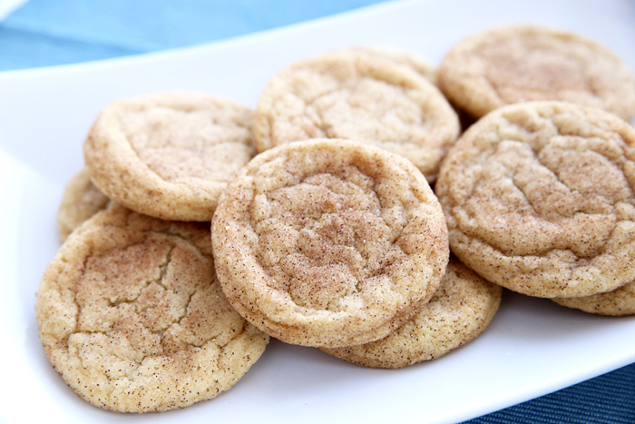

Snickerdoodle Cookies (no butter)
Prep : 15 min | Bake : 8-10 min
--------------------------------------------------------
Ingredient List:
3/4 Cup White Sugar
1/2 Cup Vegetable Oil
1 Egg
1/2 tsp Vanilla Extract
1 1/2 Cup All Purpose Flour
1/2 tsp Baking Soda
1/2 tsp Salt
3/4 tsp Cinnamon
Sugar Coating:
1 TB White Sugar
1/2 tsp Cinnamon
Instructions:
1.) Preheat oven to 375 degrees.
2.) Combine ingredients and form dough balls. Coat with sugar and cinnamon.
3.) Bake for 8-10 minutes.